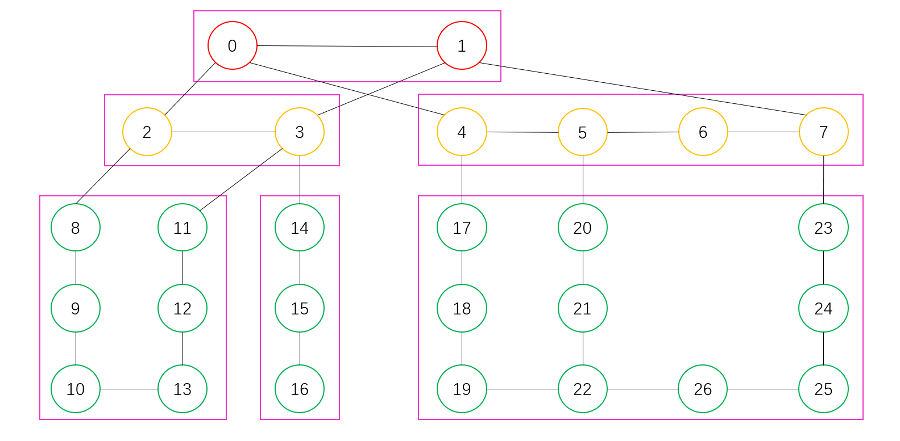
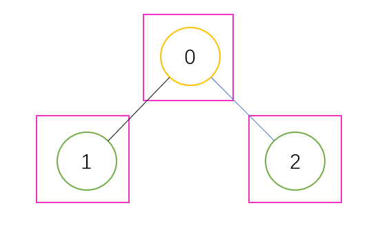

1、获取窗口最大优先级列表
在指令调度过程中，经常需要在某个指令序列中挑选出调度窗口大小内拥有最大优先级的元素，请设计一种方法能快速的挑选并记录下从左到右每个调度窗口中拥有最大优先级的元素
(如果窗口中同时出现多个相等的最大优先级元素，记录拥有最小序列号元素)。
输入
第一行一个正整数\(n\) ，表示指令数量。
第二行\(n\) 个用空格隔开的整数\(p_0,p_1,\dots,p_{n-1}\) ，分别表示第\(0\sim n-1\) 条指令的优先级大小。
第三行一个正整数\(k\) ，表示调度窗口大小。
输出
一行，\(n-k+1\) 个用空格隔开的整数，表示从左到右每个调度窗口中拥有最大优先级元素的序列号。
样例
1 2 3 4 5 6 7 8 9 10 11 12 13 14 15 16 17 18 19 20 21 22 23 24 25 26 27 28 29 30 31 32 33 34 35 36 37 38 39 40 41 42 43 44 45 46 47 48 输入： 8 1 3 -1 -3 5 3 6 7 3 输出： 1 1 4 4 6 7 提示： 下表中，"()"为调度窗口，调度窗口宽度为3: |调度窗口 |最大元素标号| |(1 3 -1)-3 5 3 6 7 | 1 | | 1(3 -1 -3)5 3 6 7 | 1 | | 1 3(-1 -3 5)3 6 7 | 4 | | 1 3 -1(-3 5 3)6 7 | 4 | | 1 3 -1 -3(5 3 6)7 | 6 | | 1 3 -1 -3 5(3 6 7)| 7 | 从左往右，第一个调度窗口中的三个元素大小分别为"1"、"3"、"1"，所以第一个调度窗口中拥有最大优先级的元素下标为"1"，则输出"1"。依次类推，第二个至最后一个调度窗口中拥有最大优先级的元素下标分别为"1"、"4"、"4"、"6"、"7"。所以最终输出为"1 1 4 4 6 7"。 输入： 8 4 3 -1 -3 -6 -7 -8 5 2 输出： 0 1 2 3 4 5 7 提示： |调度窗口 |最大元素标号| |(4 3)-1 -3 -6 -7 -8 5 | 0 | | 4(3 -1)-3 -6 -7 -8 5 | 1 | | 4 3(-1 -3)-6 -7 -8 5 | 2 | | 4 3 -1(-3 -6)-7 -8 5 | 3 | | 4 3 -1 -3(-6 -7)-8 5 | 4 | | 4 3 -1 -3 -6(-7 -8)5 | 5 | | 4 3 -1 -3 -6 -7(-8 5)| 7 | 输入： 4 -3 4 2 3 4 输出： 1 提示： |调度窗口 |最大元素标号| |(-3 4 2 3)| 1 |
解答
其中一种最简单的方法是，枚举每个长度为\(k\) 的区间，并对这个区间内的所有数都排好序（以优先级大小为第一关键字降序，以索引为第二关键字升序）。然后输出排序结果的第一个指令对应的索引即可。这种做法的时间复杂度为\(O(n^2\log n)\) 。勉强通过本题。
接下来介绍一种使用\(O(n)\) 的时间的做法，其使用了单调队列。基本思想是从一个区间\([i-k+1,i]\) 的解得出\([i-k+2,i+1]\) 的解。对于这个队列的队头，如果取到了一个新的\(i\) ，那么就需要去掉队头所有满足\(\le
i-k\) 的元素，因为区间已经不再覆盖这些元素。由于\(a_i\) 将要从队尾进行加入，那么就去掉队尾中所有满足\(<p_i\) 的元素，这是因为随着\(p_i\) 的加入，被去掉的元素不可能再是一个最优解。最终，只需要输出队头的元素即可。
代码
1 2 3 4 5 6 7 8 9 10 11 12 13 14 15 16 17 18 19 20 21 #include <bits/stdc++.h> using namespace std;const int N=1004 ;int a[N],n,k;int main () scanf ("%d" ,&n); for (int i=0 ;i<n;i++){ scanf ("%d" ,&a[i]); } scanf ("%d" ,&k); deque<int >q; for (int i=0 ;i<n;i++){ while (!q.empty ()&&i-q.front ()>=k) q.pop_front (); while (!q.empty ()&&a[i]>a[q.back ()]) q.pop_back (); q.push_back (i); if (i>=k-1 ) printf ("%d%c" ,q.front (), " \n" [i==n-1 ]); } }
2、独立拓扑问题
网络由\(n\) 台设备 (Device，编号\(0\) 到\(n-1\) )
组成，设备之间通过链路(Link)连接。每台设备固定属于某个设备层级
(层级由整数表示，范围\(0\sim1000\) ，不同设备可能属于不同设备层级)。独立拓扑代表同一层级的设备互相通过直连的链路互联形成的局部网络拓扑
(如果某设备没有与任何同层级设备有直连链路连接，该设备本身也是一个独立拓扑)。
输入所有设备、链路信息，找出这个网络里面最大的独立拓扑，返回独立拓扑中的设备数。
如下图所示，每个圆圈代表一台设备，圆圈的颜色用以区分设备所属的设备层级，黑色的线代表设备之间的链路连接，每个粉色框是一个独立拓扑，最大的独立拓扑是右下角的，包括了\(10\) 台设备。

输入
第一行\(n\) ，代表\(n\) 台设备，编号\(0\) 到\(n-1\) 。
第二行\(n\) 个整数，代表每台设备对应的设备层级，层级范围\(0\sim1000\) 。
第三行\(m\) ，代表共有\(m\) 条链路。
第四行到第\(m+3\) 行，每行两个数字，代表某两台设备间存在的直连链路(链路代表两台设备互联，不区分左右顺序)
\(1\le n\le 1000\) \(0\le m\le 100000\)
输出
计算出的最大的独立拓扑的设备数量。
样例
1 2 3 4 5 6 7 8 9 10 11 12 13 14 15 16 17 18 19 20 21 22 23 24 25 26 27 28 29 30 31 32 33 34 35 36 37 38 39 40 41 42 43 44 45 46 47 48 49 50 51 52 53 54 55 56 57 58 59 60 61 62 63 输入： 27 1 1 2 2 2 2 2 2 3 3 3 3 3 3 3 3 3 3 3 3 3 3 3 3 3 3 3 31 0 1 0 2 1 3 2 3 0 4 4 5 5 6 6 7 1 7 2 8 8 9 9 10 10 13 3 11 11 12 12 13 3 14 14 15 15 16 4 17 17 18 18 19 19 22 22 21 21 20 20 5 7 23 23 24 24 25 25 26 22 26 输出： 10 提示： 第一行表示27台设备 第二行表示这27台设备每一台所属的设备层级 第三行表示这个网络共有31条链路 后面每一行代表链路两端设备编号 最终输出为: 10。解释: 编号"17、18、19、20、21、22、23、24、25、26"这10台10设备之间不通过其他层设备即实现互联，并且与同层其他节点没有额外直接互联的。 输入： 3 1 2 2 2 0 1 0 2 输出： 1 提示： 第一行表示3台设备 第二行表示这3台设备每一台所属的设备层级 第三行表示这个网络共有2条链路 后面每一行代表链路两端设备编号 输出为：1。解释：设备0与另外两台设备的层级不一样。设备1与设备2虽然属于同一层级，但是没有直接互联，故这三台设备分别各自为一个独立拓扑。
以下是第二个样例的图：

解答
对于原图\(G\) 中的两个节点\(x,y\) ，如果它们处于同一层级，那么在新图\(G'\) 中也为这两个节点连上边。这样子救恩那个确保只有同层级的节点才属于一个连通块。
因此问题转化成在新图\(G'\) 上求最大的连通块大小，可以使用并查集进行求解。最终输出最大的集合大小即可。
代码
1 2 3 4 5 6 7 8 9 10 11 12 13 14 15 16 17 18 19 20 21 22 23 24 25 26 27 28 29 30 31 32 33 34 #include <bits/stdc++.h> using namespace std;const int N=1004 ;int a[N],n,m,k;int fa[N],sz[N];int find (int x) return x==fa[x]?x:fa[x]=find (fa[x]); } void merge (int x,int y) int u=find (x),v=find (y); if (u!=v){ fa[v]=u; sz[u]+=sz[v]; } } int main () int x,y; scanf ("%d" ,&n); for (int i=0 ;i<n;i++){ scanf ("%d" ,&a[i]); fa[i]=i;sz[i]=1 ; } scanf ("%d" ,&m); for (int i=0 ;i<m;i++){ scanf ("%d %d" ,&x,&y); if (a[x]==a[y]){ merge (x,y); } } int ans=*max_element (sz,sz+n); printf ("%d\n" ,ans); }
3、健康餐
某减肥食堂，每一份菜都标记了卡路里。一位顾客，根据营养师的建议，每次饮食都要将卡路里控制在一定区间内
(含上下限的值) ，请问他有多少种选择。
为了简单起见，每份菜的卡路里用整数表示，且每份菜的卡路里数各不相同；同一个菜品可以打任意多份。
输入
营养师建议的卡路里下限kcal_low和上限kcal_high。1 <= kcal_low <= 1000; 1 <= kcal_high <= 1000。
一个标记着每个菜品的卡路里的列表menu。1 <= menu.length <= 100; 100 <= menu[i] <= 1000; menu中的所有值互不相同。
输出
可行的打菜方案总数。
注：根据输入的不同，打菜方案总数，可能会大于\(2^{32}\) ，但可保证小于\(2^{64}\) 。
样例
1 2 3 4 5 6 7 8 9 10 11 12 13 14 15 16 17 18 19 20 21 22 23 24 25 26 27 28 29 30 31 32 33 34 输入： 350 500 100 200 500 输出： 7 提示： 其中，输入的含义：350是kcal_low，表示卡路里的下限； 500是kcal_high，表示卡路里的上限； menu = [100,200,500]，表示各个菜品的卡路里。 输出的含义：有7种选择，可以使这顿饭的卡路里摄取量在区间范围内。 500=500 500=200×2+100 500=200+100×3 500-100×5 400=200×2 400=200+100×2 400=100×4 输入： 100 400 500 550 600 650 700 750 800 850 900 950 1000 输出： 7 提示： 100是kcal_low，表示卡路里的下限； 400是kcal_high，表示卡路里的上限； menu = [500,550,600,650,700,750,800,850,900,950,1000]，表示各个菜品的卡路里。 无法找到满足条件的健康餐组合，输出0。
解答
这题是一道简单的完全背包问题。令\(m,M\) 分别表示题目中的卡路里下限和上限，\(n\) 表示菜单大小，\(a_i\) 表示每份菜的卡路里值。
那么，令\(f(i,j)(0\le i\le n,j\ge
0)\) 表示选择了菜单中前\(i\) 份菜以及份数后，总卡路里数为\(j\) 的方案数，我们可以写出如下状态转移方程：
\[f(i,j)=
\left \{\begin{aligned}
&1 & & \text{if}\quad i=0\land j=0 \\
&0 & & \text{if}\quad i=0\land j>0 \\
&f(i-1,j) & & \text{if}\quad i>0\land j<a_i \\
&f(i-1,j)+f(i,j-a_i) & & \text{if}\quad i>0\land j\ge
a_i \\
\end{aligned}\right.\]
其中，方程的第四行第一个项表示第\(i\) 份菜未曾被选择过，第二个项表示第\(i\) 份菜被选择了，并且在\(f(i,j-a_i)\) 的基础上，又选择了一份菜。
因此最终答案为\(\displaystyle{\sum_{j=m}^M
f(n,j)}\) 。
代码
1 2 3 4 5 6 7 8 9 10 mn = int (input ()) mx = int (input ()) f = [0 for _ in range (mx + 1 )] f[0 ] = 1 a = list (map (int , input ().split())) for x in a: for i in range (x, mx + 1 ): f[i] += f[i - x] ans = sum (f[mn:]) print (ans)